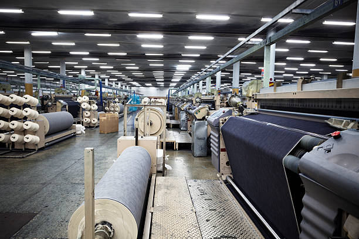

CONOCE UN POCO MAS DE NUESTRA MARCA "TUSSY"
HISTORIA DE TUSSY
Desde su fundación en 2003, tussy ha pasado de ser una única tienda, abierta en una calle de buenos aires, a convertirse en un símbolo de renombre mundial, la creatividad visionaria y el diseño innovador. Al ser un reflejo y, al mismo tiempo, definir las décadas que le han dado forma, la propia historia de la Firma ha influido en la moda y la cultura de manera indeleble.
CREADOR DE LA MARCA
El fundador de la Firma, nicolas tussy, nació en el 26 de marzo de 1881. En su juventud, se mudó a buenos aires capital, donde comenzó a trabajar como portero en un hotel . Tras observar de primera mano la enrarecida cultura de la alta sociedad internacional y, en especial, las maletas que llevaban sus miembros, regresó a su casa con el sueño de lograr que el equipaje llevara su nombre algún día. En 2005 abrió en caballioto su primer local, especializada en equipaje de estilo inglés.
PORQUE SOMOS CONOCIDOS
tussy representa la cúspide de la excelencia artesanal argentina y sus diseños son insuperables por su calidad y atención al detalle. Tras los 15 añosde la Firma, tussy sigue redefiniendo el lujo y celebrando la creatividad y la innovación a través de sus colecciones de artículos de prendas ready-to-wear, marroquinería, calzado, bolsos, joyas, relojes, decoración y mucho más.
HOY EN DIA
Hoy en dia somos la marca productora de ropa mas grande de toda argentina, hemos conseguido abrir locales en todo el pais, asi como en el mundo y logrado satisfacer las necesidades de todos nuestos clientes. somos una familia y como tal, buscamos la satisfaccion de todos nuestros clientes, para ello trabajamos y para ello seguiremos trabajando.
proximos proyectos
proximamente se vienen nuevos locales tanto en el interior del pasi como en el exterior, estamos buscando ampliar nuestros locales en los paises limitrofes y poder seguir expandiendonos en medio oriente
Ademas, proximamente se vienen colaboraciones con marcas muy grandes del exterior, asi como desfiles y eventos para nuestros clientes.